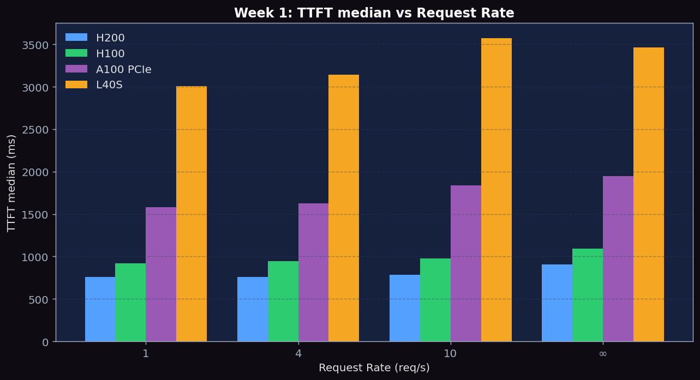
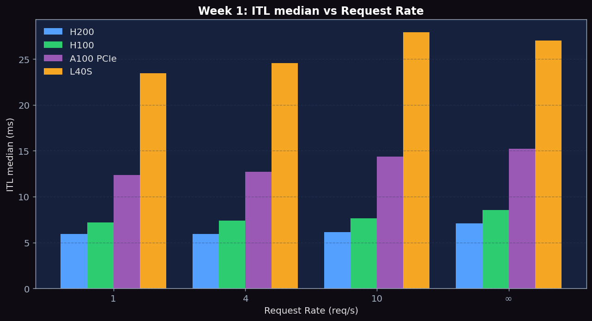
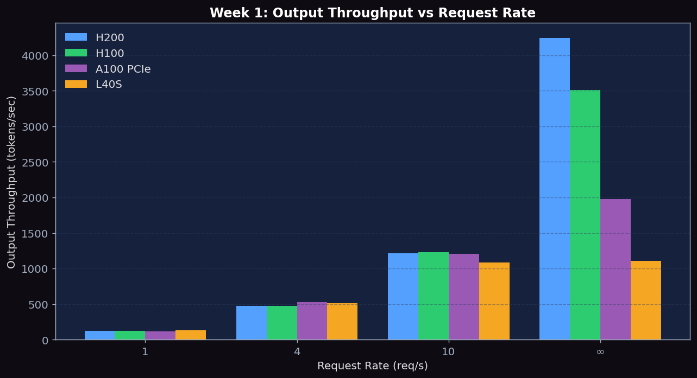

Launch vLLM and SGLang servers, benchmark at varying request rates, understand TTFT/ITL metrics
# Start vLLM server
vllm serve meta-llama/Llama-3.1-8B-Instruct \
--port 8000 \
--disable-log-requests
# Start SGLang server (separate terminal/process)
python -m sglang.launch_server \
--model meta-llama/Llama-3.1-8B-Instruct \
--port 8001Send individual requests to both servers and observe the response structure:
# vLLM completions API
curl http://localhost:8000/v1/completions \
-H "Content-Type: application/json" \
-d '{"model":"meta-llama/Llama-3.1-8B-Instruct",
"prompt":"Explain transformers in 3 sentences.",
"max_tokens":128}'Run benchmark_serving.py at request rates 1, 4, 10, and inf:
for rate in 1 4 10 inf; do
python benchmarks/benchmark_serving.py \
--backend vllm \
--model meta-llama/Llama-3.1-8B-Instruct \
--dataset-name sharegpt \
--dataset-path ShareGPT_V3_unfiltered_cleaned_split.json \
--num-prompts 150 \
--request-rate $rate \
--port 8000 \
2>&1 | tee results_vllm_rr${rate}.txt
doneNote: SGLang's OpenAI-compatible endpoint lets us reuse vLLM's benchmark_serving.py with --backend sglang, which picks the SGLang client instead of the vLLM one. The port 8001 is where we started the SGLang server in Step 1.
for rate in 1 4 10 inf; do
python benchmarks/benchmark_serving.py \
--backend sglang \
--model meta-llama/Llama-3.1-8B-Instruct \
--dataset-name sharegpt \
--dataset-path ShareGPT_V3_unfiltered_cleaned_split.json \
--num-prompts 150 \
--request-rate $rate \
--port 8001 \
2>&1 | tee results_sglang_rr${rate}.txt
donesgl_kernel currently have an SM80 ABI mismatch with A100/H100/H200/Blackwell images. If python -m sglang.launch_server fails with an ImportError on sgl_kernel, the week-1 script will fall back to vLLM-only measurements and record the error in sglang_skip.json. Working SGLang builds in our environment: L40S.
Extract TTFT, ITL, throughput from each result file. Plot request rate vs. median TTFT and median ITL for both systems.
Experiments run in parallel on PACE Phoenix cluster across four GPU types: NVIDIA H200 141GB HBM3e, H100 80GB HBM3, A100 80GB PCIe HBM2e, and L40S 48GB GDDR6. Model: Llama-3.1-8B-Instruct in BF16, max-model-len 4096, gpu-memory-utilization 0.90, 150 prompts from ShareGPT.
Each table cell is a real measurement from running benchmark_serving on the GPU. All 150 requests succeeded.
| Request Rate | TTFT p50 (ms) | TTFT p99 (ms) | ITL p50 (ms) | ITL p99 (ms) | Output Throughput (tok/s) |
|---|---|---|---|---|---|
| 1 | 760 | 911 | 5.94 | 6.16 | 126.0 |
| 4 | 757 | 892 | 5.92 | 6.13 | 474.2 |
| 10 | 782 | 965 | 6.11 | 6.49 | 1210.7 |
| inf | 909 | 1054 | 7.10 | 7.34 | 4245.3 |
| Request Rate | TTFT p50 (ms) | TTFT p99 (ms) | ITL p50 (ms) | ITL p99 (ms) | Output Throughput (tok/s) |
|---|---|---|---|---|---|
| 1 | 919 | 1118 | 7.18 | 7.55 | 120.5 |
| 4 | 946 | 1135 | 7.39 | 7.78 | 476.7 |
| 10 | 975 | 1196 | 7.62 | 8.07 | 1229.4 |
| inf | 1094 | 1311 | 8.55 | 8.84 | 3514.1 |
| Request Rate | TTFT p50 (ms) | TTFT p99 (ms) | ITL p50 (ms) | ITL p99 (ms) | Output Throughput (tok/s) |
|---|---|---|---|---|---|
| 1 | 1579 | 1656 | 12.35 | 13.37 | 118.1 |
| 4 | 1629 | 1672 | 12.73 | 13.08 | 529.0 |
| 10 | 1839 | 1879 | 14.37 | 14.68 | 1208.7 |
| inf | 1948 | 1965 | 15.22 | 15.36 | 1973.6 |
| Request Rate | TTFT p50 (ms) | TTFT p99 (ms) | ITL p50 (ms) | ITL p99 (ms) | Output Throughput (tok/s) |
|---|---|---|---|---|---|
| 1 | 3004 | 3122 | 23.47 | 24.41 | 132.8 |
| 4 | 3141 | 3267 | 24.54 | 25.61 | 514.2 |
| 10 | 3574 | 3789 | 27.93 | 29.42 | 1087.7 |
| inf | 3460 | 3654 | 27.03 | 28.45 | 1108.0 |
Both servers ran the same 150-prompt ShareGPT workload at identical request rates. SGLang env uses sglang 0.5.10 + torch 2.9.1; vLLM env uses vllm-continuum + torch 2.8.0. Same Llama-3.1-8B model, same L40S hardware.
| Rate | vLLM TTFT (ms) | SGLang TTFT (ms) | vLLM ITL (ms) | SGLang ITL (ms) | vLLM tok/s | SGLang tok/s |
|---|---|---|---|---|---|---|
| 1 | 3004 | 2935 | 23.47 | 22.93 | 132.8 | 130.1 |
| 4 | 3141 | 3213 | 24.54 | 25.15 | 514.2 | 505.0 |
| 10 | 3574 | 4092 | 27.93 | 31.97 | 1087.7 | 984.5 |
| inf | 3460 | 3271 | 27.93 | 25.55 | 1108.0 | 1171.7 |

Figure 1: TTFT p50 vs Request Rate across H200, H100, A100, L40S. H200 lowest (~760-909ms), H100 close behind (~919-1094ms), A100 PCIe higher (~1579-1948ms), L40S highest (~3000ms). All four show modest growth with load.

Figure 2: ITL p50 vs Request Rate. ITL stays remarkably stable across rates: H200 ~6ms, H100 ~7-8ms, A100 PCIe ~12-15ms, L40S ~24-28ms. The A100 PCIe (1,935 GB/s) sits between H100 HBM3 (3.35 TB/s) and L40S GDDR6 (864 GB/s).

Figure 3: Output Throughput (tokens/sec). Near-linear scaling at low rates, then saturation. H200 hits 4245 tok/s at rate=inf, H100 3514 tok/s, A100 PCIe 1974 tok/s, L40S only 1108 tok/s (saturated already at rate=10).
| Metric | Description | Unit |
|---|---|---|
| TTFT (p50, p99) | Time to first token — measures prefill latency + queuing delay | ms |
| ITL (p50, p99) | Inter-token latency — measures per-step decode time | ms |
| Output throughput | Output tokens generated per second across all requests | tok/s |
| Request latency (p50, p99) | End-to-end per-request time (TTFT + all decode steps) | ms |
To understand what really happens when you run vllm serve, trace the request lifecycle from HTTP entry to GPU forward pass and back. The files below are listed in the order a request flows through them.
build_app() function registers the routes /v1/completions, /v1/chat/completions, /health, /metrics. The run_server() function builds the AsyncLLM and starts uvicorn.OpenAIServingCompletion.create_completion(). Validates the request, calls tokenizer, then submits to the engine via engine.generate(). Streams tokens back via SSE if stream=true.tokenizer_config.json.AsyncLLM is the async-friendly wrapper around the engine core. It owns the input/output queues and the engine subprocess. Read AsyncLLM.generate() to see how a request becomes an async generator yielding RequestOutput objects.EngineCore is the synchronous core that runs the scheduling + model execution loop. The main method is step(): 1) call scheduler to pick which requests run this iteration, 2) call model_executor.execute_model(), 3) update sequences with new tokens. This loops continuously inside a subprocess.Scheduler.schedule() implements continuous batching. Each call returns a SchedulerOutput describing which prefill chunks and which decode tokens to run this step. This is the heart of how vLLM achieves high throughput.Request dataclass with status (WAITING, RUNNING, FINISHED), prompt token IDs, output token IDs, sampling params. The scheduler moves requests between these statuses.Executor base class. Subclasses include UniProcExecutor (single-GPU) and MultiprocExecutor (multi-GPU TP). The execute_model() method is called by EngineCore each step.Worker owns one GPU. It holds the model_runner, KV cache pool, and runs execute_model() which converts SchedulerOutput into a forward pass.GPUModelRunner.execute_model() is where the actual model.forward() happens. Also manages CUDA graphs, KV cache attention metadata, and sampling. This is the bottom of the stack — everything else just feeds this.vllm/benchmarks/serve.py) — The client. Generates Poisson arrivals via get_request() with numpy.random.exponential(1.0/request_rate) inter-arrival delays. Then it spawns one async task per request, sends to the server, and records timestamps for first chunk (TTFT) and each subsequent chunk (ITL).async_request_openai_completions() uses aiohttp to POST /v1/completions with stream=true, then iterates the SSE stream — every line increments a token count and updates timestamps.launch_server() function in this file is what python -m sglang.launch_server ultimately calls.TokenizerManager: receives HTTP requests, tokenizes, and queues them. Equivalent to vLLM's serving_completion + the tokenizer wrapper.Scheduler: SGLang's main loop. Calls get_next_batch_to_run() which combines the radix cache lookup with policy-based sequence selection. Equivalent to vLLM's Scheduler.schedule().TpModelWorker: SGLang's per-GPU worker. Equivalent to vLLM's gpu_worker + gpu_model_runner combined.RadixCache: token-level prefix sharing. We cover this in depth in Week 6.--backend sglang|vllm|openai so you can drive an SGLang or vLLM server with the same client. Same Poisson arrival logic as vLLM's benchmark_serving.py.vllm/v1/engine/async_llm.py — understand the public API surface (~10 min)vllm/v1/engine/core.py — read EngineCoreProc.run_busy_loop() and step() (~15 min)vllm/v1/core/sched/scheduler.py — read Scheduler.schedule() (~20 min)benchmarks/benchmark_serving.py — understand how TTFT/ITL are measured (~15 min)Below are real excerpts from vllm-continuum that implement the concepts you measured. Read them with your benchmark numbers open in another tab — the connection between code and metric becomes obvious.
vllm/v1/engine/async_llm.py:328 — AsyncLLM.generate()async def generate(
self,
prompt: PromptType,
sampling_params: SamplingParams,
request_id: str,
lora_request: Optional[LoRARequest] = None,
trace_headers: Optional[Mapping[str, str]] = None,
priority: int = 0,
data_parallel_rank: Optional[int] = None,
) -> AsyncGenerator[RequestOutput, None]:
"""
Main function called by the API server to kick off a request
* 1) Making an AsyncStream corresponding to the Request.
* 2) Processing the Input.
* 3) Adding the Request to the Detokenizer.
* 4) Adding the Request to the EngineCore (separate process).
A separate output_handler loop runs in a background AsyncIO task,
pulling outputs from EngineCore and putting them into the
per-request AsyncStream.
"""
...
self._run_output_handler()
...Every HTTP request hitting /v1/completions arrives here. The 4-step docstring is the entire request lifecycle: queue → tokenize → detokenize → engine. The background output_handler is where TTFT becomes visible — vLLM streams the first token through this handler the moment EngineCore produces it.
Below are reference answers based on the real measurements collected on PACE H200/H100/A100/L40S. Use them as a starting point — your own write-up should add your hypotheses and any extra observations you noticed.
Observation: On H200, TTFT median grew from 760ms (rr=1) to 909ms (rr=inf) — only +20%. On H100: 919→1094ms (+19%). On L40S: 3004→3460ms (+15%).
Why TTFT is high even at rr=1: At rr=1 there is essentially no queuing, so \(\text{TTFT} \approx \text{prefill time}\). ShareGPT prompts average ~120 input tokens, and the prefill must read the entire 16GB Llama-3.1-8B once through HBM. On H200 at 4.8 TB/s that's ~3.3ms theoretical, but full prefill includes attention, MLP, and output layers — easily reaching 700-900ms total.
Little's Law connection: \(L = \lambda \cdot W\) says average number in system \(L\) = arrival rate \(\lambda\) × average wait time \(W\). With 150 prompts at rr=10 (closed-loop is ~32 req/s on H200), the average \(L \approx 32 \cdot 0.91\text{ s} \approx 29\) in flight at any time. vLLM's continuous batching handles this comfortably, so TTFT only grows ~20%. The 20% growth IS the queuing delay (909-760 = 149ms) — small because vLLM batches efficiently.
Saturation point per GPU:
Evidence:
On L40S (the only GPU we have valid SGLang data for so far):
| Rate | vLLM TTFT | SGLang TTFT | vLLM Tput | SGLang Tput | Winner |
|---|---|---|---|---|---|
| 1 | 3004 | 2935 | 132.8 | 130.1 | SGLang TTFT |
| 4 | 3141 | 3213 | 514.2 | 505.0 | vLLM (slight) |
| 10 | 3574 | 4092 | 1087.7 | 984.5 | vLLM clearly |
| inf | 3460 | 3271 | 1108.0 | 1171.7 | SGLang clearly |
Hypothesis based on architecture:
The two phases have completely different cost structures:
In the data: L40S ITL went 23.47ms (rr=1) → 27.93ms (rr=10) → 27.03ms (rr=inf). The +4ms growth is from the larger active batch contending for compute (more attention work per step). H200 went 5.94→6.11→7.10ms, same pattern, smaller absolute growth because H200 is faster.
Practical consequence: If you care about per-request latency, lower rate is always better. If you care about aggregate cost-per-token, push rate as high as possible until ITL starts to climb noticeably (beyond ~30-50% growth). vLLM's continuous batching makes the trade-off favorable: 25× more throughput at rr=inf vs rr=1 on H200, while ITL only grows 20%.